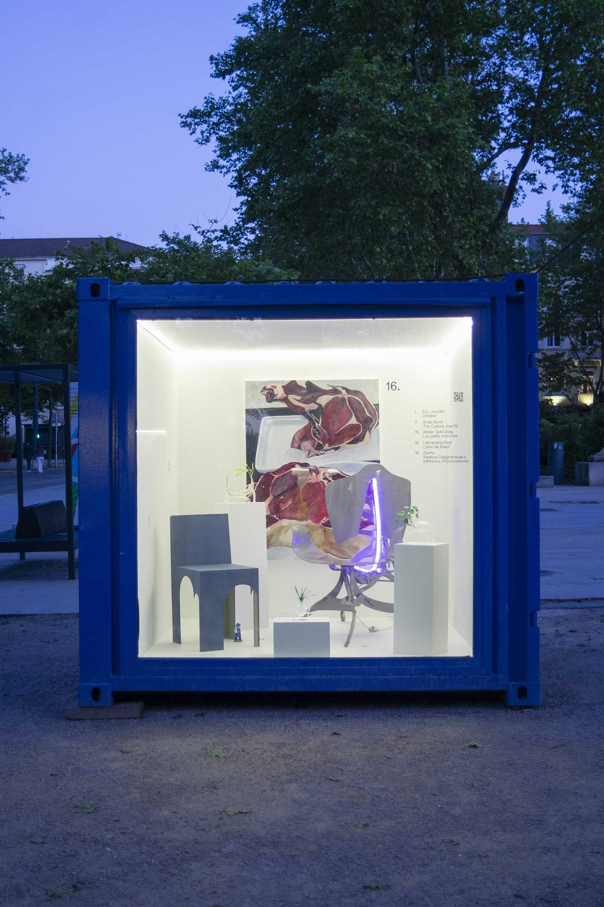
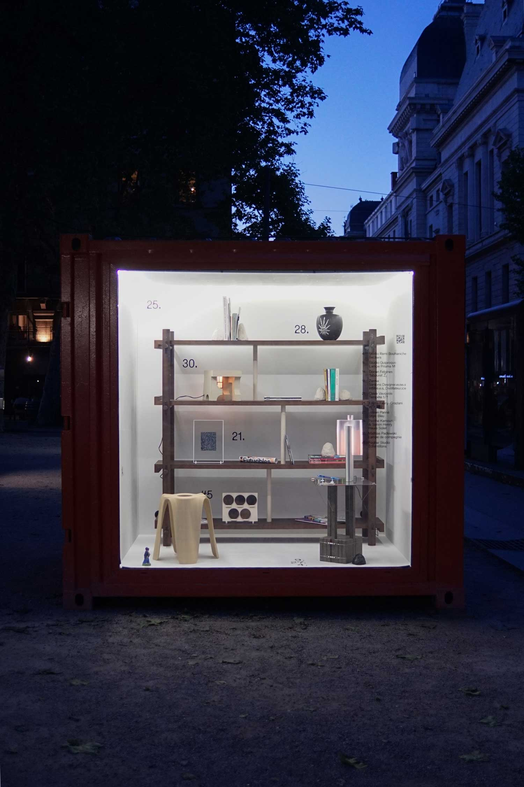
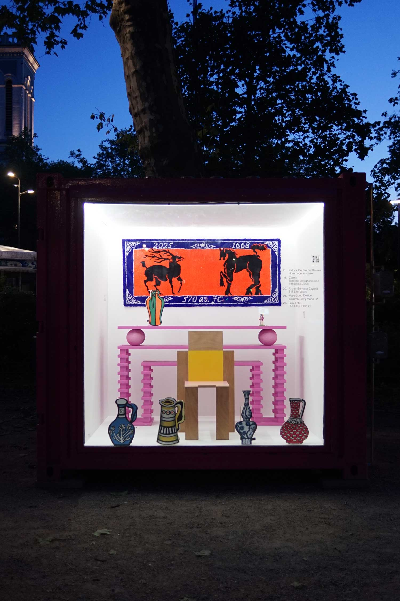
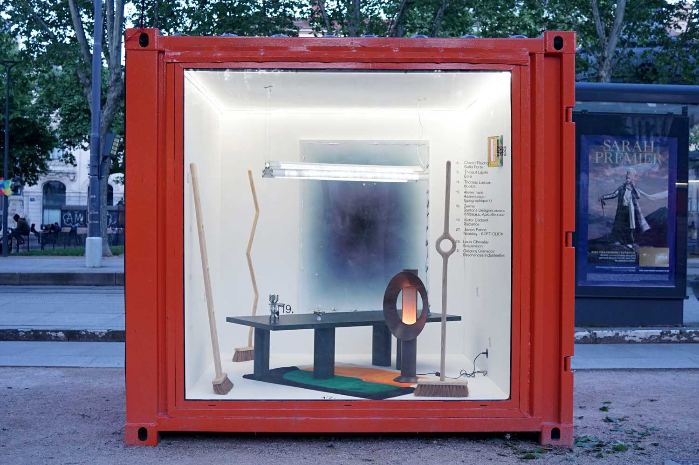
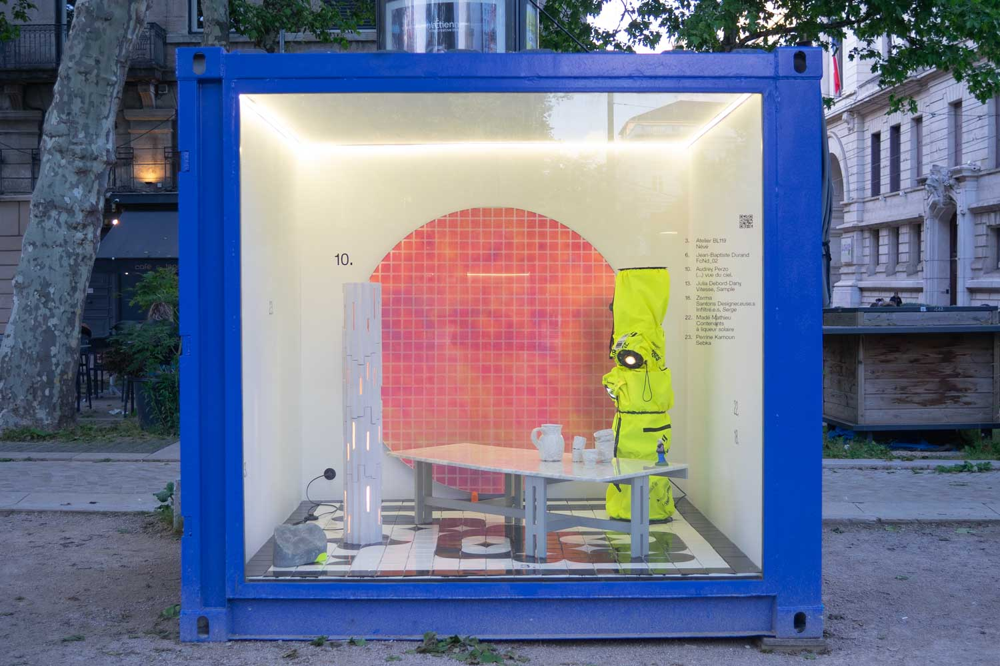
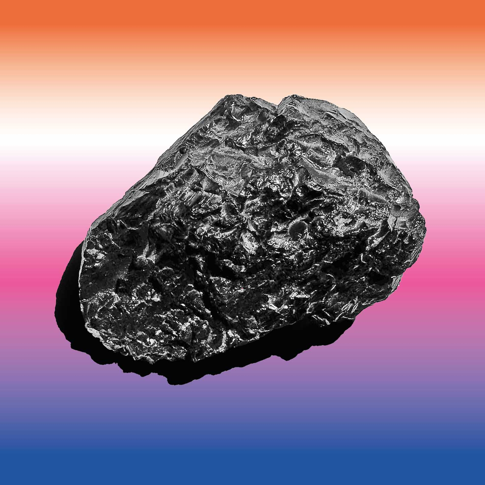

Exposition Futuribles by ppdesigner
22.05 - 06.07 2025
Place Jean-Jaurès
42000 Saint-Étienne
Futuribles est une exposition présentée par Presque Pas Designer, un collectif de 6 designer·euse·s composé de Thomas Dutoit, Emma Faury‑‑Graziani, Manon Freulon, Félix Fritz, Mathilde Garcia (Very Good Design) et Perrine Kamoun.
Mise en place dans des conteneurs vitrés tels des dioramas, Futuribles offre un regard sur les multiples voies possibles après l’École Supérieure d’Art et Design de Saint-Étienne, reflétant la diversité des approches et les dynamiques de l’art et du design contemporain.
Le temps de quelques semaines, 30 designer·euse·s et artistes qui ne se sont parfois jamais croisé·e·s durant leurs années stéphanoises voient leur(s) pièce(s) cohabiter.
Pour celles et ceux dont les productions dépassent le cadre de l’exposition, par leur format, leur nature théorique ou leur contexte d’implantation, un podcast relatant leurs expériences est disponible sur → ppdesigner.fr et par le biais des distributeurs présents sur la vitrine rose.
ppdesigner est un collectif de jeunes designers réunis autour d’une pratique engagée, exploratoire et pluridisciplinaire. Nous partageons une même envie : questionner nos manières de produire, de transmettre et d’imaginer des formes nouvelles à travers le design graphique, l’objet, la matière et l’espace.
Nous développons des projets auto-initiés, des expositions, des objets et des éditions, dans lesquels nous confrontons nos expertises respectives au service de récits communs.
Pour toute question ou demande de collaboration, vous pouvez nous écrire à contactppdesigner@gmail.com
Le site de ppdesigner a été conçu et réalisé par Félix Fritz & Thomas Dutoit.
→ Exposition Futuribles






